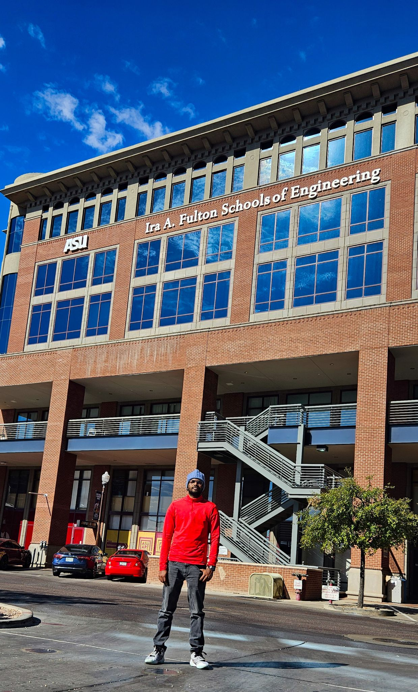
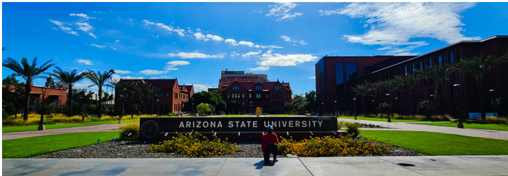

MACHINE LEARNING ENGINEER · RESEARCHER
Building AI systems that reason, retrieve, and deliver.
I'm Narottaman Gangadaran, a Computer Science master's student at Arizona State University. I build agentic AI, multimodal retrieval systems, and production ML infrastructure—with a background in financial technology.

ASU · Tempe, Arizona
CURRENT FOCUSAgentic AI × RLResearch to production
5,000+Research documents indexed
4 + 1Specialist agents + supervisor
95%+RAG citation grounding accuracy
10M+Financial records processed
01 / ABOUT
Research-minded.
Engineering-driven.
I enjoy taking ambitious ML ideas beyond notebooks and into reliable systems. My work spans LangGraph agents, multimodal GraphRAG, distributed LLM post-training, and large-scale data engineering.
At ASU's Cognition Lab, I develop learning and research tools powered by grounded AI. Before that, I worked at Standard Chartered on financial data pipelines, credit-risk ML, and backend applications.
PythonPyTorchLangGraphNeo4jDatabricksKubernetes
02 / EXPERIENCE
Where I've worked
From financial data engineering to agentic AI research.
JAN 2025 — PRESENT
AI/ML Engineer · ASU Cognition Lab
Built a LangGraph-based study assistant with QA, teaching, quiz, and research agents, supported by a multimodal GraphRAG service over 5,000+ academic documents. Productionized services with FastAPI, Redis, Docker, Kubernetes, and evaluation workflows.
LangGraphGraphRAGGeminiFastAPI
SEP — NOV 2024
AI & Data Science Engineer Intern · Wavess
Built a Gemini-powered GTM intelligence pipeline combining financial news and company signals. Developed automated LLM evaluation and fine-tuned Gemini 2.5 Flash-Lite with LoRA for content optimization.
GeminiLoRAn8nEvaluation
AUG 2020 — JUN 2024
SWE & Distributed Systems Engineer · Standard Chartered
Built Django applications for corporate credit assessment and PySpark/Databricks Bronze–Silver–Gold pipelines processing 10M+ records. Developed classification and regression models for credit-risk workflows.
PythonPySparkDatabricksMLflow
03 / SELECTED PROJECTS
Work worth exploring
Source code, systems thinking, and research.
01 / AGENTIC SYSTEMS↗
SupervisorQALearnQuizResearch
Edu Multi-Agent Platform
A LangGraph supervisor orchestrating four specialist agents for grounded Q&A, adaptive learning, Canvas-only quizzes, and research ideation.
LangGraphFastAPICanvas LMS
Explore repository ↗
02 / RETRIEVAL & GRAPHS↗
Research GraphRAG
Multimodal retrieval across paragraphs, figures, tables, and citation relationships using Neo4j, ChromaDB, Qdrant, MinerU, and GROBID.
Neo4jQdrantColQwen2
Explore repository ↗
03 / RL RESEARCH↗
s₀s₁s₂s₃step-wise credit assignment
Localized-GRPO
Master's thesis on state-wise relative optimization for multi-step LLM reasoning, using rollout-based credit assignment instead of only final-answer reward.
PyTorchVERLvLLMRay
Explore repository ↗
04 / RESEARCHBetter reasoning starts with better credit assignment.
My M.S. thesis, Localized-GRPO: State-Wise Relative Optimization for Multi-Step LLM Reasoning Puzzles, explores how to assign localized learning signals to intermediate reasoning states rather than treating an entire solution as one indivisible outcome.
15.20%Reported puzzle solve rate
3.5×Over best reported baseline
+6.1 ppGSM8K vs. VinePPO
05 / TOOLKITTechnologies I work with
ML & Research
PyTorch · TensorFlow · Scikit-learn · XGBoost · LoRA/PEFT · VERL · vLLM · Ray
Agents & Retrieval
LangGraph · Gemini · Neo4j · ChromaDB · Qdrant · ColQwen2 · RAG · Pydantic
Backend & Data
Python · Java · SQL · Django · FastAPI · PySpark · Databricks · PostgreSQL · Redis
Cloud & MLOps
Docker · Kubernetes · Terraform · GitHub Actions · Jenkins · MLflow · AWS · Azure

Arizona State University · Tempe, AZ